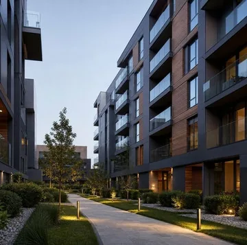
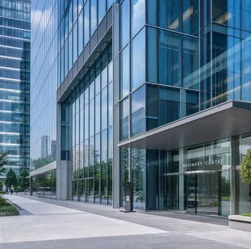
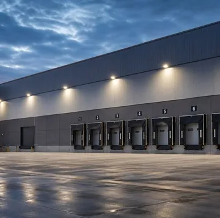
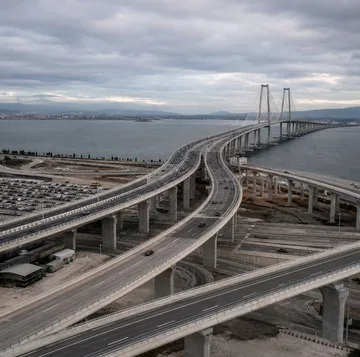
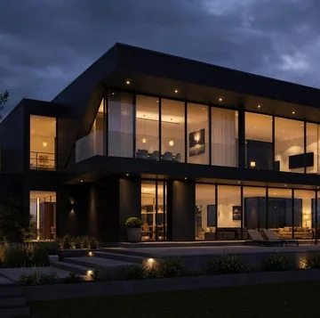
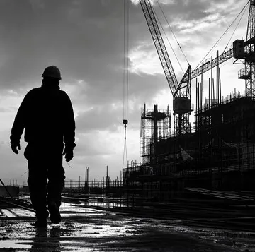

Шесть направлений работ

Жилое строительство
Строительство жилых комплексов. Пример: ЖК Cosmic City, Астана, 2022.
Обсудить задачу →
Коммерческое строительство
Торговые центры и другие коммерческие объекты. Пример: ТРЦ Asia Park, Астана.
Обсудить задачу →
Промышленные объекты
Производственные и складские здания, инженерные сети и электроснабжение: проектирование, монтаж КТП, вентиляции и наружных сетей, пусконаладка.
Обсудить задачу →
Инфраструктура и дороги
Дороги, развязки, наружные сети и благоустройство: подготовка основания, укладка покрытий, монтаж освещения и инженерных систем, сдача объекта.
Обсудить задачу →
Проектирование и инжиниринг
Проектная документация и согласования, затем строительно-монтажные работы и гарантийное сопровождение.
Обсудить задачу →
Реконструкция и капитальный ремонт
Пример: реконструкция зоны фуд-корта в ТРЦ Asia Park, Астана.
Обсудить задачу →